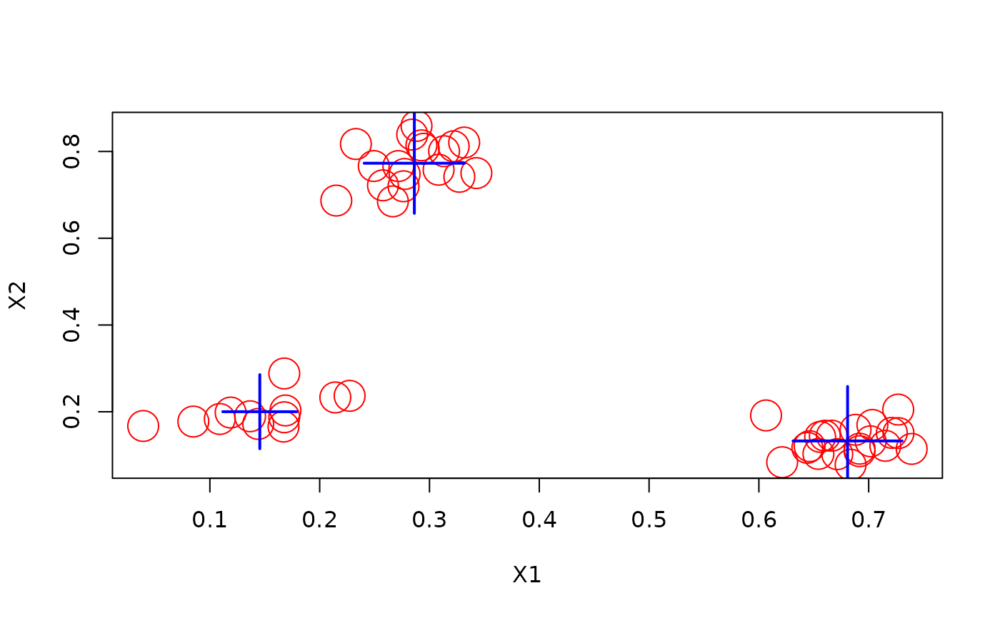

DSC_SlidingWindow – Data Stream Clusterer Using a Sliding Window
Source:R/DSC_SlidingWindow.R
DSC_SlidingWindow.RdThe clusterer keeps a sliding window for the stream and rebuilds a DSC clustering model at regular intervals. By default is uses DSC_Kmeans. Other DSC_Macro clusterer can be used.
Arguments
- formula
a formula for the classification problem.
- model
regression model (that has a formula interface).
- window
size of the sliding window.
- rebuild
interval (number of points) for rebuilding the regression. Set rebuild to
Infto prevent automatic rebuilding. Rebuilding can be initiated manually when callingupdate().- ...
additional parameters are passed on to the clusterer (default is DSC_Kmeans).
Details
This constructor creates a clusterer based on DST_SlidingWindow. The clusterer has
a update() and predict() method.
The difference to setting up a DSC_TwoStage is that DSC_SlidingWindow rebuilds
the model in regular intervals, while DSC_TwoStage rebuilds the model on demand.
See also
Other DSC:
DSC(),
DSC_Macro(),
DSC_Micro(),
DSC_R(),
DSC_Static(),
DSC_TwoStage(),
animate_cluster(),
evaluate.DSC,
get_assignment(),
plot.DSC(),
predict,
prune_clusters(),
read_saveDSC,
recluster()
Other DSC_Macro:
DSC_DBSCAN(),
DSC_EA(),
DSC_Hierarchical(),
DSC_Kmeans(),
DSC_Macro(),
DSC_Reachability()
Examples
library(stream)
stream <- DSD_Gaussians(k = 3, d = 2, noise = 0.05)
# define the stream clusterer.
cl <- DSC_SlidingWindow(
formula = ~ . - `.class`,
k = 3,
window = 50,
rebuild = 10
)
cl
#> Data Stream Clusterer on a Sliding Window
#> Function: DSC_Kmeans
#> Class: DSC_SlidingWindow, DST_SlidingWindow, DST
# update the clusterer with 100 points from the stream
update(cl, stream, 100)
#> Warning: 'varlist' has changed (from nvar=2) to new 3 after EncodeVars() -- should no longer happen!
# get the cluster model
cl$model$result
#> k-Means (weighted)
#> Class: DSC_Kmeans, DSC_Macro, DSC_R, DSC
#> Number of micro-clusters: 50
#> Number of macro-clusters: 3
plot(cl$model$result)
